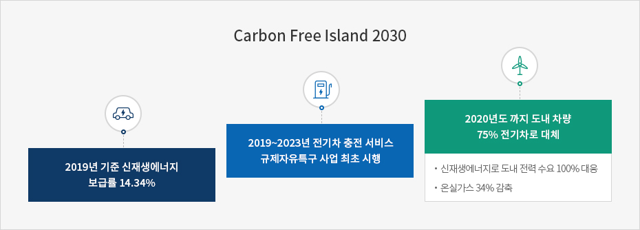
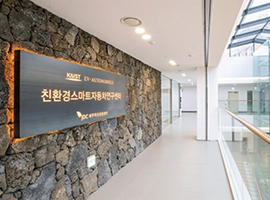
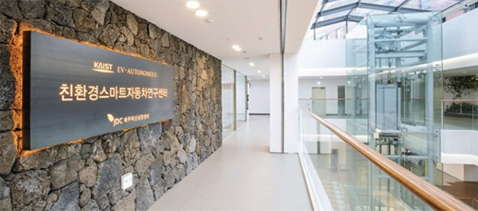

그린 에너지
- Home
- 투자환경
- 미래 유망산업
- 그린 에너지
CFI2030


제주는 탄소 없는 섬 2030 프로젝트에 따라 2030년까지 도내 모든 전력을 신재생에너지로 전환합니다.
수송 수단의 75%를 전기차로 대체해 온실가스 배출을 줄이고 에너지 자립을 이룸으로써 신新기후 체제에 대응합니다.
전기차 선도 도시로서의 압도적인 지위와 섬의 자연적 특성으로 인한 강력한 바람은 그린 에너지 산업에서 제주가 가진 가장 큰 자원입니다.
이에 더해 신기술을 적용하고 주민 참여형 사업을 추진하기에 유리한 여건을 갖춘 제주는 국내외 온실가스 배출 저감 정책을 선도하는 지역입니다.
녹색 성장의 세계적 모델을 만들어가는 제주의 여정은 새로운 비즈니스 기회로 가득합니다.
탄소 없는 섬 2030 프로젝트



총 발전량 대비 신재생에너지 보급률 (2011 ~ 2019)

전기차 비즈니스


- 전기차는 이동 수단을 넘어 움직이는 에너지 저장 장치이자 고성능 컴퓨터로 발전하고 있습니다.
- 전기차 비즈니스는 자율주행 기술, 신재생에너지 등과 결합하며 4차 산업혁명을 이끌고 있습니다.
전기차 선도 도시
- 전기차·충전기 보급률/ 1인당 충전기 설치 - 1위
- 도내 전기차 비율(전국 0.4%) - 5%
- 국내 전기차 중 제주 점유율 - 20%
- 전기차 충전기 수 (개방형 3,293기) - 17,722기
- 도내 전기차 수 (전국 9만 대) - 18,178대

전기차 충전 서비스 규제자유특구

-
배터리산업화센터
- 전국 최초 EV 배터리 재사용 분야 특화 단지
- 지역 자립형 EV 폐배터리 검사 기반 마련
- 신재생에너지와 연계한 에너지 저장 시스템 ESS 체계 구축
- 국내외로 확산 가능한 사업 모델 수립
-
 KAIST 친환경스마트자동차연구센터
- 친환경 자동차·자율주행 자동차의 핵심 기술 연구·개발 센터
- KAIST와 연계해 제주국제자유도시개발센터 제주혁신성장센터 내 설치
- 연구·개발 결과의 실용화 및 일자리 창출로 연결되는 선순환 도모